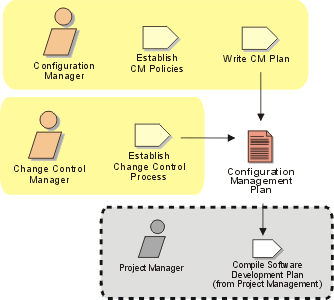

Disciplines >
Disciplines >
 Configuration & Change Management >
Configuration & Change Management >
 Workflow >
Plan Project Configuration & Change Control
Workflow >
Plan Project Configuration & Change Control
Disciplines >
Configuration & Change Management >
Workflow >
Plan Project Configuration & Change Control
Workflow Detail:
|
Topics
|
 |
The purpose of this workflow detail is to:
CM policies refer to the ability to identify, safeguard and report on the artifacts that have been approved for use in a project. Identification is achieved through proper labeling practices. Project artifacts are safeguarding is achieved through archiving, baselining and reporting practices.
The purpose of having standard, documented change control processes is to ensure that changes are made within a project in a consistent manner and the appropriate stakeholders are informed of the state of the product, changes to it and the cost and schedule impact of these changes.
The CM Plan describe all CM related activities to be performed during the course of the product/project lifecycle. It documents how product related CM activities are to be planned, implemented controlled and organized.
The Configuration Manager needs to be an organized soul, and has to be accountable for all project artifacts. The Configuration Manager needs to ensure the project policies are enabled for software developers such that artifacts only go through given gates once they have been approved in accordance with the defined development practices. The Configuration Manager needs to make sure that the CM Plan is followed, and that audit reporting is occurring on a regular basis, and that backups are in safe-keeping offsite, and that software licenses are maintained up-to-date.
The Change Control Manager is a key arbitrator on a project. The decisions on
the inclusion of changes for given build are made by the Change Control Manager.
This person needs to be well informed about potential impacts on the inclusion,
or exclusion, of given changes to the product and the political climate in which
it resides.
|
Rational Unified
Process
|